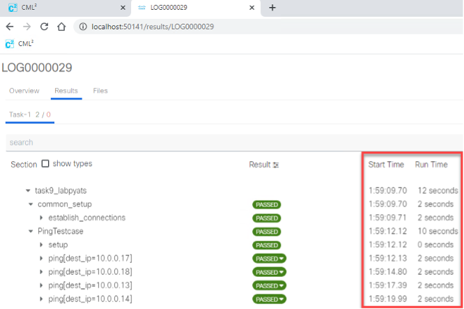

Step 1: Show the Results of Tests in a Browser¶
Value Proposition: In this last task, we will see how to show the results of the tests in a more user-friendly way in a browser. For this, the pyats run job command will be used in a Bash shell.
When a test is executed using the pyats run job it adds the following advantages:
Logs of test runs are saved into the archive
Makes a graphical representation of test results in a browser
Has the ability to run tests in different Python scripts
To use pyats run job, a special file “job file” (written in Python) should be created.
A job file looks like the following example:
<test_name1> - specifies the path in the system to the Python file with the first list of tests (for example task3step3.py). <test_name2> - specifies the path to the Python file with the second list of tests (for example task3step4.py).
The method run from the imported library ats.easypy instructs the system to run tests in sequence.
import os
from ats.easypy import run
def main():
# Find the location of the script in relation to the job file
<test_name1> = os.path.join('<file_with_tests1.py>')
<test_name2> = os.path.join('<file_with_tests2.py>')
# Execute the testscript
run(testscript=<test_name1>)
run(testscript=<test_name2>)
To call pyats run job, use the following command in a Bash shell:
pyats run job <job-file> --testbed <testbed-file>
Schematically, the process of a pyats run job can be shown as follows:

Let’s use a pyats job run to execute tests from task 3 step 4. PyATS job file task4step1.py has been pre-configured for this.
Open runtestsjob.py file in Nano and check it (the structure must be in accordance with the one shown above).
nano task4step1.py
Exit Nano without saving by pressing Ctrl + X
Execute the pyATS job file with the pyats run job command:
pyats run job task4step1.py --testbed pyats_testbed.yaml
After the completion of the job, check the results:
pyats logs view
Google Chrome will be launched to show the last jobs run. Minimize the Linux shell window.
Note
Don’t close the Linux shell; otherwise, it will stop the local pyATS web server.
Click the upper line in a list to open results of the last job run:

Detailed results of the tests comprising the last run job would be shown.
Note
Pay special attention to the result of each test, which is shown along with start time and run time of each one.
Click on the test ping[dest_ip=10.0.0.17] (see “1” on next figure). A detailed log from the execution of this test will be shown on the right side of the window (see “2”).
Click on the PASSED button for the test ping[dest_ip=10.0.0.17] (see “3” on next figure). Ensure that the test passed message is shown (see “4”).

You can open detailed results of the last job without opening the list of previous jobs, using the following command in the shell:
pyats logs view -latest
To test this option, follow the next steps.
Maximize the Linux shell, minimized in step 5. Stop the running pyATS web server by pressing Ctrl + C
Open the web page with the detailed results of the last job:
pyats logs view -latest
Ensure detailed results of the tests comprising the last run job are shown right away.
Open the Linux shell again, and stop the running pyATS web server by pressing Ctrl + C
{kind=link}
Tip
pyATS run is a very handy tool and it is recommended that you use it to run your pyATS tests.
You might also check the official documentation for the details found on this site.
Section author: Luis Rueda <lurueda@cisco.com>, Jairo Leon <jaileon@cisco.com>